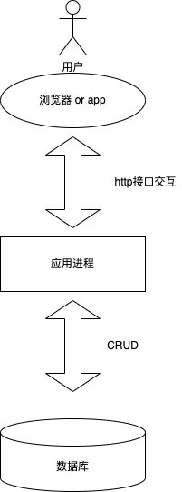
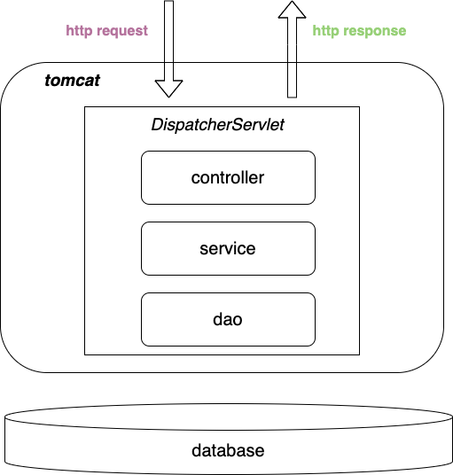
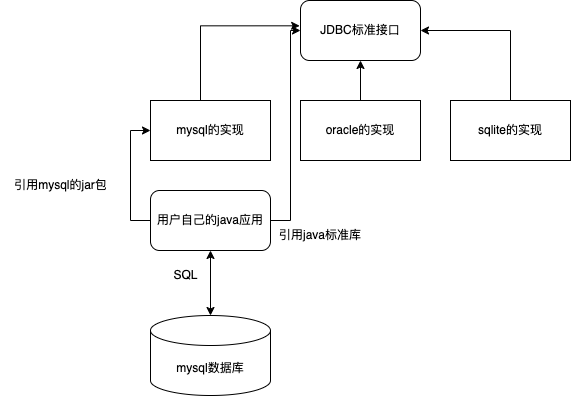

前言
本文首先会对服务端系统做一个简单的概括，然后对如何构建一个java服务端系统进行描述
与客户端对比
服务端是相对于客户端而言的，或者换一个说法，后端是相对于前端而言的 我们常见的B/S，C/S架构，其实S就是指的服务端server，客户端的形式比较多，例如B/S架构的B指的就是broswer浏览器，C/S架构指的C是client客户端 客户端常见的有PC上的应用程序，也有移动端常见的各种app，甚至微信小程序也是一种客户端的体现形式
客户端重点关注的是界面、交互，而服务端关注的是计算逻辑以及存储，客户端和服务端在目前流行的实现方式上是通过http接口交互
简要介绍

http接口
http协议是目前主流的前后端交互协议，一般情况下http的请求称为request，响应称为response，两者都由header和body组成 http请求的方法一般是GET和POST，body一般是json格式 所以客户端在用户执行了一系列交互动作之后，通过http接口和服务端交互，让服务端完成各种计算
应用进程
服务端在收到http请求之后要进行逻辑处理，逻辑处理一般是由服务端应用完成的 一个服务端应用可以简单理解如下模式
public static void main(String[] args) {
while (true) {
receiveRequest();
calculate();
sendResponse();
}
}
一个死循环，完成接收请求，计算，返回响应三件事情。
数据库
由于计算机结构中，内存一旦掉电，数据就没有了。但是绝大多数系统需要持久化数据，例如记录用户的订单、记录商户的商品，因此需要有一个存储数据的地方 后端应用使用的存储一般是关系型数据库，与关系型数据库的交互方式一般是SQL(结构化查询语言)，SQL使用非常简短的关键字和语法就可以表达需要进行的数据操作
-- 查询用户最近的10条订单
select user_id, order_id, order_amount, order_status
from user_order
order by gmt_modified
desc
limit 10;
绝大多数服务端系统就是 应用 + 数据库 组成的，服务端程序员经常被称为CRUD程序员，所有的计算逻辑无外乎增删改查 而增删改查的目标就是数据库的记录，因此一个简单的服务端系统可以简单理解为面向数据库编程的系统 但是需要注意的是，一个真正复杂且易于迭代的系统一定不是面向数据库的，至少数据库是可替代的
java相关的实现
http接口
主要是使用springmvc的能力实现的
servlet
java的http接口开发标准，官方只定义了接口，实现可以是多样的，其中tomcat是最著名的servlet容器
// req可以理解为请求 res可以理解为响应
public interface Servlet {
public void service(ServletRequest req, ServletResponse res)
throws ServletException, IOException;
}
过滤器Filter，也是servlet的标准
public interface Filter {
public default void init(FilterConfig filterConfig) throws ServletException {}
// 用户可以自定义，相当于可以在所有http请求上添加相同的前置或后置逻辑
public void doFilter(ServletRequest request, ServletResponse response,
FilterChain chain) throws IOException, ServletException;
public default void destroy() {}
}
tomcat
servlet的容器，使用线程池处理http请求
什么是线程池？ 池子 里面包含很多线程 为什么要使用线程池？ 线程的创造和销毁比较耗费资源，特别是java的线程模型，java的线程和系统线程是1:1的，所以线程池是在应用启动之后就创建好线程，后续复用创建好的就不需要来一个请求创建一个线程了
springmvc
实现了关键的类DispatcherServlet，从名称可以看出是做分发用的，以一个简单的代码为例，使用注解标注了一个http接口，路径是/app/summary/like，请求是json格式的，返回也是json格式
@Controller
@RequestMapping("/app/summary")
public class AppSummaryController {
@Resource
private AppSummaryService appSummaryService;
@PostMapping("/like")
@ResponseBody
public ApiResult<Boolean> like(@RequestBody SummaryIndexLikeRequest request) {
// 用户id待定，目前使用uuid代替
appSummaryService.operateForAppSummaryIndex(request.getId(),
UUID.randomUUID().toString().substring(0, 16), request.getLike());
return ApiResult.successResult(Boolean.TRUE);
}
}
如果没有springmvc，开发人员需要编写servlet处理逻辑，其中包括大量http请求解析，结果组装的逻辑。springmvc使用一个统一的Servlet，通过注解的方式将逻辑分发到用户自定义逻辑，大幅度简化了http接口的开发过程。
springmvc有一个拦截器的概念，org.springframework.web.servlet.HandlerInterceptor，逻辑和之前讲过的Filter类似，区别在于可以拿到具体的处理器(方法签名中的handler)
public interface HandlerInterceptor {
// 前置
default boolean preHandle(HttpServletRequest request, HttpServletResponse response, Object handler)
throws Exception {
return true;
}
// 后置
default void postHandle(HttpServletRequest request, HttpServletResponse response, Object handler,
@Nullable ModelAndView modelAndView) throws Exception {
}
// 后置完成返回http响应之后的动作
default void afterCompletion(HttpServletRequest request, HttpServletResponse response, Object handler,
@Nullable Exception ex) throws Exception {
}
}
内部逻辑
内部逻辑是指服务端CRUD逻辑，大部分java应用都会分层处理，之前的http接口会作为controller层，内部逻辑一般使用service层，存储相关一般命名为dao层（data access layer），层次是自顶向下依赖，即controller依赖service、service依赖dao。

由于应用之间由大量的依赖关系，即controller层的类需要依赖service层，应用启动的时候需要手工初始化，即使用new新建对应的类，然后调用set方法进行依赖注入，非常耗时耗力。特别是新增了类，除了编写新增类的逻辑，还需要管理类对象的新增和依赖注入。
spring就是用于处理这个问题的
spring IOC 依赖注入
@Service
public class AppSummaryServiceImpl implements AppSummaryService {
@Resource
private UserLikeRecordMapper userLikeRecordMapper;
@Resource
private AppSummaryIndexMapper appSummaryIndexMapper;
}
AppSummaryServiceImpl是AppSummaryService的实现，并且依赖dao层的两个接口UserLikeRecordMapper和AppSummaryIndexMapper。在spring中就可以使用上述代码实现
其中@Service表示将当前的对象放到spring容器中，其他类的对象可以注入这个对象。与之对等的注解还有@Component @Repository @Controller
@Resource表示将UserLikeRecordMapper类型的对象注入到当前对象，与之相似的注解是@Autowired，两者区别可以搜索查到，在此不赘述
除了以上的注解，还有一个专门注入配置值的注解@Value，一般用于注入配置，例如
@Component
public class TestBean {
// 表示从配置文件application.properties读取spring.application.name的值，如果没有，使用默认值like
@Value("${spring.application.name:like}")
private String appName;
}
如果自定义的类对象组装逻辑特别复杂，也支持如下方式构造并且注入到spring容器，这种方式在mybatis集成到spring中经常被用到
@Configuration
public class CustomConfiguration {
// 容器中对象的名称是方法的名称complexBean
@Bean
public ComplexBean complexBean() {
ComplexBean complexBean = new ComplexBean();
// 复杂逻辑
return complexBean
}
}
spring AOP 面向切面编程
简单理解为在类似的处理流程嵌入统一的逻辑，常见于 1. 打印接口日志 2. 统一参数校验 3. 统一记录方法调用耗时 4. 统一权限校验
以打印接口日志为例，假如没有AOP，需要在所有方法的开头和结尾加上 1. 计算当前时间 2. 作差求出耗时 3. 记录日志
如果有AOP就可以进行统一代码拦截，不需要动现有代码 AOP的例子比较多，目前较流行的是使用自定义注解实现
创建自定义注解
首先，创建一个自定义注解@Loggable，用于标记需要统计耗时的方法。
package com.example.demo.annotation;
import java.lang.annotation.ElementType;
import java.lang.annotation.Retention;
import java.lang.annotation.RetentionPolicy;
import java.lang.annotation.Target;
@Target(ElementType.METHOD)
@Retention(RetentionPolicy.RUNTIME)
public @interface Loggable {
}
创建AOP切面
接下来，创建一个AOP切面类，用于拦截标记了@Loggable注解的方法，并统计其耗时。
package com.example.demo.aspect;
import com.example.demo.annotation.Loggable;
import org.aspectj.lang.ProceedingJoinPoint;
import org.aspectj.lang.annotation.Around;
import org.aspectj.lang.annotation.Aspect;
import org.slf4j.Logger;
import org.slf4j.LoggerFactory;
import org.springframework.stereotype.Component;
@Aspect
@Component
public class LoggingAspect {
private static final Logger logger = LoggerFactory.getLogger(LoggingAspect.class);
@Around("@annotation(com.example.demo.annotation.Loggable)")
public Object logExecutionTime(ProceedingJoinPoint joinPoint) throws Throwable {
long start = System.currentTimeMillis();
Object proceed = joinPoint.proceed();
long executionTime = System.currentTimeMillis() - start;
logger.info(joinPoint.getSignature() + " executed in " + executionTime + "ms");
return proceed;
}
}
使用自定义注解
现在，你可以在任何需要统计耗时的方法上使用@Loggable注解。
package com.example.demo.service;
import com.example.demo.annotation.Loggable;
import org.springframework.stereotype.Service;
@Service
public class ExampleService {
@Loggable
public void someMethod() throws InterruptedException {
// 模拟一些耗时操作
Thread.sleep(1000);
}
public void anotherMethod() throws InterruptedException {
// 这个方法没有使用@Loggable注解，不会被统计耗时
Thread.sleep(500);
}
}
以上代码展示了如何使用Spring自定义注解和AOP来实现方法耗时统计。通过@Loggable注解和AOP切面，你可以轻松地在日志中记录方法的执行时间。
spring的其他扩展点
bean构建相关
- InitializingBean接口
- PostConstruct注解
- BeanPostProcessor
- xml文件中的init方法（目前比较少了）
数据库交互
数据库是用于持久化数据的系统，大部分系统都会和关系型数据库（简称RDB）打交道，对数据库的操作一般是使用SQL。因此java的标准库对数据库操作制定了一套规范JDBC，所有的数据库厂商如果想让应用和自己的数据库交互，就需要实现JDBC规定的接口。
JDBC的做法其实和SPI机制非常类似，SPI的全称是Service Provider Interface，简单来说，就是有一方制定标准，但是不提供具体的实现，而是由其他主体按照标准实现，外部使用标准的主体可以不关注具体实现，只和接口交互就可以了。假想我们自己是一家电商公司的开发人员，我们需要对接外部很多商家，不同的商家有不同的订单创建接口，如果我们一家一家对接，每对接一家就需要开发测试发布一遍，成本很高。如果我们制定了标准的订单创建接口，规定好出入参数和错误码，其他商家按照我们的规范去实现，那我们的开发成本就非常低，只需要处理好商家和对应实现的映射关系就可以了。
JDBC

下面给出一个jdbc的使用示例，假设我们需要访问的是mysql数据库，数据库名称testdb，表结构如下
CREATE TABLE users (
id INT AUTO_INCREMENT PRIMARY KEY,
name VARCHAR(100),
email VARCHAR(100)
);
一个使用JDBC查询数据库的示例如下
import java.sql.Connection;
import java.sql.DriverManager;
import java.sql.PreparedStatement;
import java.sql.ResultSet;
import java.sql.SQLException;
public class JDBCExample {
// JDBC URL, 用户名和密码
private static final String JDBC_URL = "jdbc:mysql://localhost:3306/testdb";
private static final String JDBC_USER = "root";
private static final String JDBC_PASSWORD = "password";
// JDBC 变量为了以后使用
private static Connection connection;
public static void main(String[] args) {
try {
// 注册 JDBC 驱动
Class.forName("com.mysql.cj.jdbc.Driver");
// 打开连接
System.out.println("Connecting to database...");
connection = DriverManager.getConnection(JDBC_URL, JDBC_USER, JDBC_PASSWORD);
// 执行查询
String sql = "SELECT id, name, email FROM users";
PreparedStatement preparedStatement = connection.prepareStatement(sql);
ResultSet resultSet = preparedStatement.executeQuery();
// 展开结果集数据库
while (resultSet.next()) {
// 通过字段检索
int id = resultSet.getInt("id");
String name = resultSet.getString("name");
String email = resultSet.getString("email");
// 输出数据
System.out.print("ID: " + id);
System.out.print(", Name: " + name);
System.out.println(", Email: " + email);
}
// 完成后关闭
resultSet.close();
preparedStatement.close();
} catch (SQLException se) {
// 处理 JDBC 错误
se.printStackTrace();
} catch (Exception e) {
// 处理 Class.forName 错误
e.printStackTrace();
} finally {
// 关闭资源
try {
if (connection != null && !connection.isClosed()) {
connection.close();
}
} catch (SQLException se) {
se.printStackTrace();
}
}
System.out.println("Goodbye!");
}
}
JDBC的使用过程涉及3大概念 1. Connection 表示和数据库的连接，由DriverManager生成 2. Statement 表示和数据库交互的会话，由Connection生成，一般使用PreparedStatement，特点是预编译SQL提高执行效率。 3. ResultSet Statement执行SQL语句之后获取的执行结果
和数据库的所有交互都可以由以上3个步骤完成。JDBC的使用看上去比较简单，但是平时开发SQL语句是比较灵活动态的，而且处理结果ResultSet需要转换为java应用自己的类，比较麻烦。程序员为了简化开发过程，少写代码，就在JDBC的基础上开发了ORM框架，ORM的全程是Object Record Mapping，用于将数据库的查询结果映射成java应用的对象。国内较流行的框架是mybatis
mybatis
还是以刚才的数据库表为例，如果使用mybatis开发，那么开发方式如下
首先，你需要配置 MyBatis，包括创建 MyBatis 配置文件（如 mybatis-config.xml）和映射文件（如 UserMapper.xml）。然后，你需要创建对应的 Java 接口和实体类。
1. 创建 MyBatis 配置文件（mybatis-config.xml）
<?xml version="1.0" encoding="UTF-8" ?>
<!DOCTYPE configuration
PUBLIC "-//mybatis.org//DTD Config 3.0//EN"
"http://mybatis.org/dtd/mybatis-3-config.dtd">
<configuration>
<environments default="development">
<environment id="development">
<transactionManager type="JDBC"/>
<dataSource type="POOLED">
<property name="driver" value="com.mysql.cj.jdbc.Driver"/>
<property name="url" value="jdbc:mysql://localhost:3306/testdb?serverTimezone=UTC"/>
<property name="username" value="root"/>
<property name="password" value="password"/>
</dataSource>
</environment>
</environments>
<mappers>
<mapper resource="UserMapper.xml"/>
</mappers>
</configuration>
2. 创建映射文件（UserMapper.xml）
<?xml version="1.0" encoding="UTF-8" ?>
<!DOCTYPE mapper
PUBLIC "-//mybatis.org//DTD Mapper 3.0//EN"
"http://mybatis.org/dtd/mybatis-3-mapper.dtd">
<mapper namespace="com.example.UserMapper">
<select id="selectAllUsers" resultType="com.example.User">
SELECT id, name, email FROM users
</select>
</mapper>
3. 创建实体类（User.java）
package com.example;
public class User {
private int id;
private String name;
private String email;
// Getters and Setters
public int getId() {
return id;
}
public void setId(int id) {
this.id = id;
}
public String getName() {
return name;
}
public void setName(String name) {
this.name = name;
}
public String getEmail() {
return email;
}
public void setEmail(String email) {
this.email = email;
}
}
4. 创建 Mapper 接口（UserMapper.java）
package com.example;
import java.util.List;
public interface UserMapper {
List<User> selectAllUsers();
}
5. 编写 MyBatis 应用程序（MyBatisExample.java）
package com.example;
import java.io.InputStream;
import java.util.List;
import org.apache.ibatis.io.Resources;
import org.apache.ibatis.session.SqlSession;
import org.apache.ibatis.session.SqlSessionFactory;
import org.apache.ibatis.session.SqlSessionFactoryBuilder;
public class MyBatisExample {
public static void main(String[] args) throws Exception {
String resource = "mybatis-config.xml";
InputStream inputStream = Resources.getResourceAsStream(resource);
SqlSessionFactory sqlSessionFactory = new SqlSessionFactoryBuilder().build(inputStream);
try (SqlSession session = sqlSessionFactory.openSession()) {
UserMapper mapper = session.getMapper(UserMapper.class);
List<User> users = mapper.selectAllUsers();
for (User user : users) {
System.out.println("ID: " + user.getId());
System.out.println("Name: " + user.getName());
System.out.println("Email: " + user.getEmail());
System.out.println("-------------------");
}
}
}
}
详细说明：
-
MyBatis 配置文件：
mybatis-config.xml包含了 MyBatis 的全局配置，包括环境配置（如数据源）和映射器（Mapper）的配置。 -
映射文件：
UserMapper.xml包含了 SQL 语句和映射规则。这里定义了一个selectAllUsers的 SQL 查询，并将结果映射到User类。 -
实体类：
User.java是一个简单的 Java 类，用于表示数据库中的users表的一行。 -
Mapper 接口：
UserMapper.java是一个 Java 接口，定义了与数据库交互的方法。MyBatis 会自动实现这个接口，并将 SQL 查询的结果映射到返回类型上。 -
MyBatis 应用程序：
MyBatisExample.java是主类，它读取 MyBatis 配置文件，创建SqlSessionFactory，然后打开一个SqlSession来执行查询。查询结果通过 Mapper 接口返回，并打印到控制台。
一般情况下java应用会基于spring去构建，因此开发人员只需要开发映射文件以及Mapper接口。
映射文件可以使用mybatis提供的各种xml标签动态生成SQL，大幅度增加了开发人员的处理效率
目前广为流行的mybaits-plus其实是在mybatis的基础上提供了通用的mapper和service，可以在不编写任何SQL语句的情况下，快速地实现对单表的CRUD、批量、逻辑删除、分页等操作。